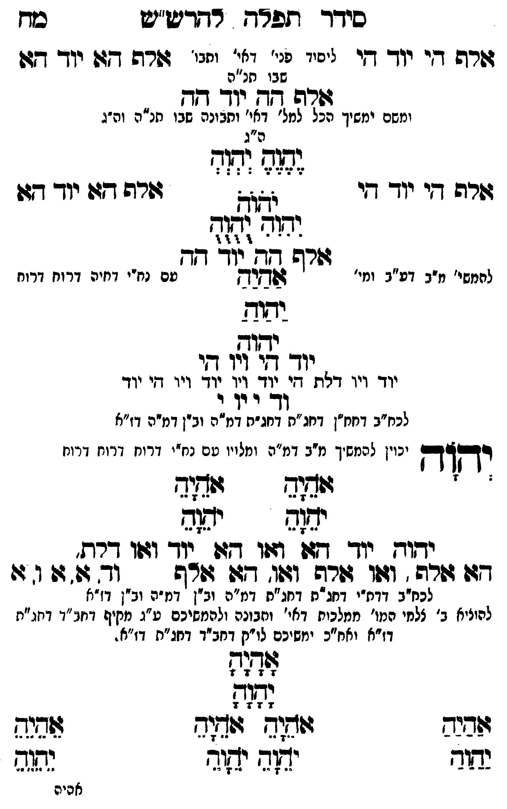

Neue Klartextfassung
=== טבלה === [טור ימין] אלף הי יוד הי [טור אמצעי] [ליסוד פני' דאי' ותבו' שבו חו"ח] [טור שמאל] אלף הא יוד הא === סוף טבלה === אלף הה יוד הה [ומשם ימשך הכל למל' דאי' ותבונה שבו חו"ח וה"ג] === טבלה === [טור ימין] אלף הי יוד הי [טור אמצעי] [ה"ג] יֶהֶוֶהֶ יְהְוְהְ יֹהֹוֹהֹ יִהִוִהִ יֻהֻוֻהֻ [טור שמאל] אלף הא יוד הא === סוף טבלה === אלף הה יוד הה [להמשיך מ"ב דע"ב ומי' עם נח"י דחיה דרוח:] אַהַיַהַ יַהַוַהַ יהוה יוד הי ויו הי יוד ויו דלת הי יוד ויו יוד ויו הי יוד וד י וי י [לכח"ב דחח"ן דחג"ת דחג"ת דמ"ה וב"ן דמ"ה דז"א] יְהוָה [יכוין להמשיך מ"ב דמ"ה ומלויו עם נח"י דרוח דרוח דרוח] === טבלה === [טור ימין] אָהָיָהָ יָהָוָהָ [טור אמצעי] [טור שמאל] אָהָיָהָ יָהָוָהָ === סוף טבלה === יהוה יוד הא ואו הא יוד ואו דלת, הא אלף, ואו אלף ואו, הא אלף וד א או א [לכח"ב דדת"י דחג"ת דחג"ת דמ"ה וב"ן דמ"ה וב"ן דז"א] [להעלות ב' צלמי המו' ממלכות דאי' ותבונה ולהמשיכם ע"ג מקיף דחב"ד דחג"ת דז"א וחו"ב ימשיכם לו"ק דחב"ד דחג"ת דז"א.] === טבלה === [טור ימין] אַהַיַהַ יַהַוַהַ [טור אמצעי] אָהָיָהָ יָהָוָהָ אֹהֵיָהֵ אֹהֵיָהֵ יֹהֵוָהֵ יֹהֵוָהֵ [טור שמאל] אֵהֵיֵהֵ יֵהֵוֵהֵ === סוף טבלה ===
Original gegen neue OCR · Niqqud für Vergleich ausgeblendet
Original
=== טבלה === [טור ימין] אלף הי יוד הי [טור אמצעי] [ליסוד פני' דאי' ותבו'K100-001 שבו חו"ח] [טור שמאל] אלף הא יוד הא === סוף טבלה === אלף הה יוד הה [ומשם ימשךK100-002 הכל למל' דאי' ותבונה שבו חו"ח וה"ג] === טבלה === [טור ימין] אלף הי יוד הי [טור אמצעי] [ה"ג] יהוה יהוה יהוה יהוה יהוה [טור שמאל] אלף הא יוד הא === סוף טבלה === אלף הה יוד הה [להמשיךK100-003 מ"ב דע"ב ומי' עםK100-004 נח"י דחיה דרוח:] אהיה יהוה יהוה יוד הי ויו היK100-005 יוד ויו דלת היK100-006 יוד ויו יוד ויו הי יוד ודK100-007 י ויK100-008 י [לכח"ב דחח"ן דחג"תK100-009 דחג"ת דמ"ה וב"ן דמ"ה דז"א] יהוה [יכויןK100-010 להמשיך מ"ב דמ"ה ומלויו עםK100-011 נח"י דרוח דרוח דרוח] === טבלה === [טור ימין] אהיה יהוה [טור אמצעי] [טור שמאל] אהיה יהוה === סוף טבלה === יהוהK100-012 יוד הא ואו הא יוד ואו דלת, הא אלף, ואו אלף ואו, הא אלףK100-013 וד א או א [לכח"בK100-014 דדת"י דחג"ת דחג"תK100-015 דמ"ה ∅K100-016 וב"ן דמ"ה וב"ן דז"א] [להעלותK100-017 ב' צלמיK100-018 המו' ממלכות דאי' ותבונהK100-019 ולהמשיכם ע"ג מקיף דחב"ד דחג"תK100-020 דז"א וחו"בK100-021 ימשיכם לו"ק דחב"ד דחג"ת דז"א.] === טבלה === [טור ימין] אהיה יהוה [טור אמצעי] אהיה יהוה אהיה אהיה יהוה יהוה [טור שמאל] אהיה יהוה === סוף טבלה ===K100-022
OCR · fehlbar
סידך תלרח רחדטש"ש סדז גזרה די יוך די זיני לג. ג[- יזנ' גזרה דג: יוך דזוK100-001 שבו תנ"ה זדה זך יו- דדך ומשם ימשיךK100-002 הכל למל' דאי' ותבונה שבו תנ"ה וה"ג ה"ג [([י (ז[גז גשרה די יוך די יטוק זורה דזו יוך דזו לל[ ו 4 4 דורש [20וך ח- להמשי'K100-003 מ"ב דע"ב ומי' שמרח טםK100-004 נח"י דחיה דרוח דרוח 4339 עדוא יוך זזי' וזו דיK100-005 יוד ויו דלח די ד. גך גוד ויו דיK100-006 יוד וד'K100-007 י יוK100-008 י לכח"ב דחמח"ן דחג"חK100-009 דחג"ת דמ"ה וב"ן דמ"ה דז"א רדקץךךץ יכויןK100-010 להמשיך מ"ב דמ"ה ומלויו טםK100-011 נח"י דרוח וזרוז דרונז ' 242421042 ומגג יזגוב נדוטK100-012 יוד דגו זזו גזו 2וד ושזו דדת. - דזו שרפן זזו זזרף "וזלדצו שדד 'K100-013 וד זד 4 ו ו לכח"בK100-014 דדת"י דחג"ח דחג"חK100-015 דמ"ה ובין ' דז"הK100-016 וב"ן דז"א להוניאK100-017 ב' צלחיK100-018 המו' ממלכות דאי' וחבונהK100-019 ולהמשיכם ע"ג מקיף דחב"ד דחג"יזK100-020 דז"א ואח"כK100-021 ימשיכם לו"ק דחב"ד דחג"ח דז"א . לז]ז לז[ פבנש וזג גיש(ב זבנש נתוד יזד ישוד גגז2 אסיהK100-022